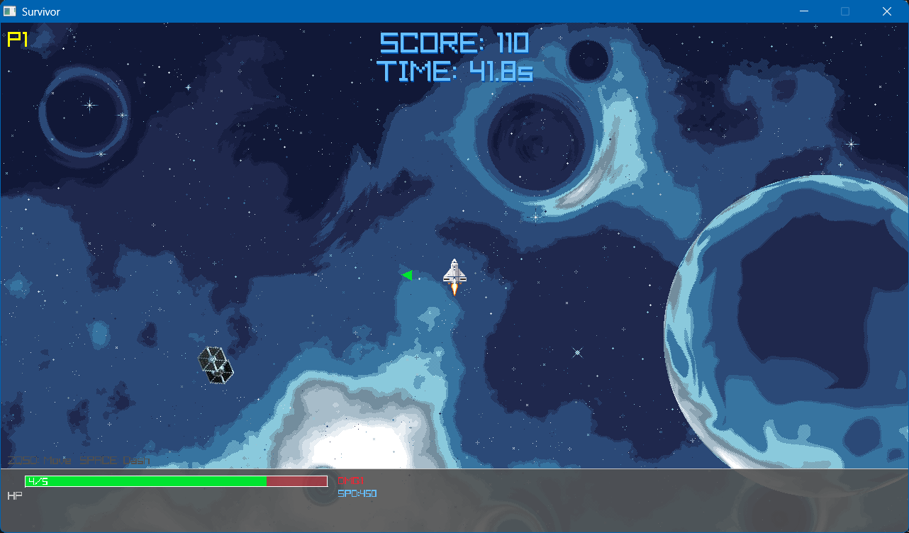
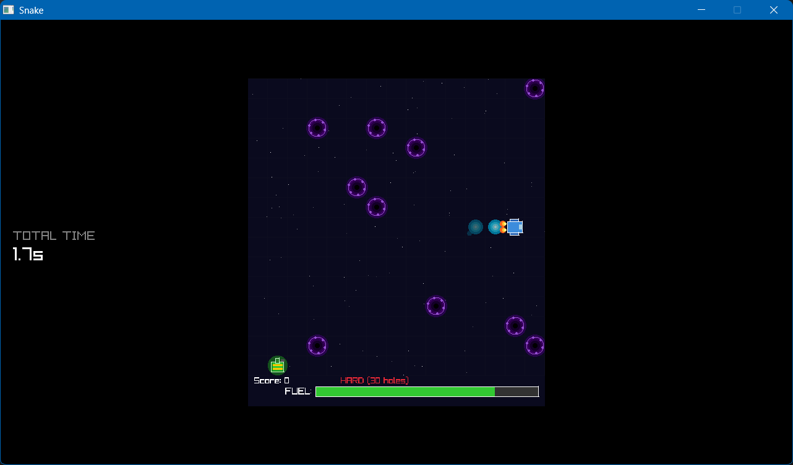
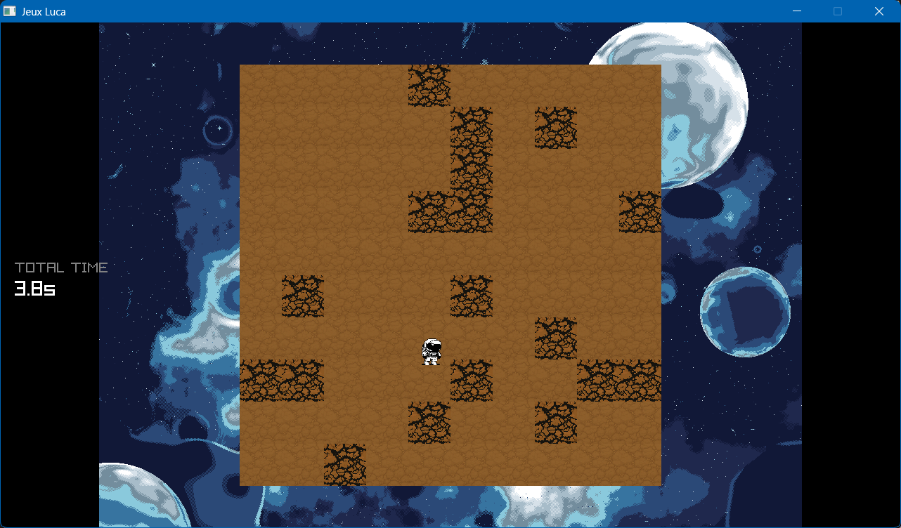
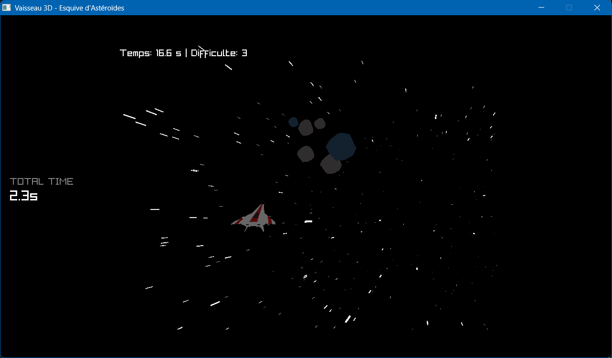

The Switch Game
Un projet réalisé en C / Raylib
1. Le Concept
- Plus qu'une liste de jeux : une Borne Virtuelle.
- 4 Jeux.
- 4 Visions.
- 1 Thème : l'espace.
- Un cerveau grillé après 3 essais.

1.1 L'Univers Visuel




2. Organisation & Workflow
Rôles
- Architecture : Intégration, Main, Menu.
- Modules Jeux : 1 dev par jeu (Snake, Survivor...).
Outils
- Git / GitHub (Feature branches).
- Visual Studio Code, Antigravity.
- Normes de code communes.
3. Fonctionnalités Clés
Multijoueur
Local Split-screen (Co-op / Versus).
Zapping
Rotation auto ou manuelle des jeux.
Persistance
High Scores sauvegardés localement.
Design
UI unifiée & Particules partagées.
4. Architecture Logicielle
(Orchestrator)
Une approche modulaire basée sur l'injection de dépendances.
4.1 Le Cœur : Main Loop
Rôle : Orchestrer la durée de vie de l'application.
- Initialise la fenêtre et l'audio.
- Gère la machine d'état (Menu vs Jeu).
- Pilote la rotation aléatoire des jeux.
while (!WindowShouldClose()) {
update_menu(menu); // 1. Gestion des Inputs
if (menu->etat == MENU_DEMARRAGE) {
while (menu->partie_en_cours) {
// 2. Durée Aléatoire (5s - 12s)
float t = 5.0f + (rand() % 7);
// 3. Exécution du Module
switch (current_game) {
case SURVIVOR: RunSurvivor(..., t, &rst); break;
case SNAKE: RunSnake(..., t, &rst); break;
case LUCA: RunLuca(..., t, &rst); break;
case VALENTIN: RunValentin(..., t, &rst); break;
}
// 4. Logique de Restart & Rotation
if (rst) {
ResetAll(); current_game = rand()%4; continue;
}
current_game = (current_game + 1) % 4; // Suivant
}
menu->etat = MENU_PRINCIPAL; // Fin de session
}
}
4.2 Interface des Modules
// Signature Standard (Contrat)
void RunGame(
Difficulte difficulty, // Config
ModeJoueur mode, // Solo/Coop
bool resume, // Persistance
bool *game_active, // Contrôle
float timeout_seconds, // Zapping
float *total_time, // Score Global
bool *restart // Global Reset
);
Standardisation :
Tous les jeux respectent strictement cette signature.
resume: Permet de "pauser" un jeu et de le reprendre plus tard.*restart: Permet à n'importe quel jeu de demander un reset complet de la session.
4.3 Services Partagés
SplitScreen.c
Gère le rendu en 2 viewports (RenderTextures) automatiquement.
InitSplitScreen(mode)
BeginPlayerViewport(1)
Scores.c
Gère la persistance CSV et les algos de tri (Temps vs Points).
add_score(list, time, type)
save_scores(filename)
4.3 Système de Build
Automatisation & Portabilité
Makefile : L'outil de construction universel.
- Automatisation : Compilation incrémentale (`.o`) et lancement rapide (`make run`).
- Multi-plateforme : Détection dynamique de l'OS (Linux / macOS / Windows MinGW).
- Dépendances : Gestion automatique des flags Raylib et Math (`-lm`).
# Détection Auto de l'OS
UNAME_S := $(shell uname -s)
# Compilation (Wall = Warning All)
CC = gcc
CFLAGS = -Wall -Wextra -std=c99 -O2
# Cible Principale
$(TARGET): $(OBJS)
$(CC) $(CFLAGS) -o $@ $(OBJS) $(LDFLAGS)
# Targets Utilitaires
clean:
rm -rf build $(TARGET)
run: $(TARGET)
./$(TARGET)
DEMO TIME
INSERT COIN
(Menu -> Solo -> Split-screen -> Rotation)
5.1 Mécanique de Rotation : L'Orchestre
L'Imprévisibilité Contrôlée
Le Concept :
- Le
main.cagit comme un Orchestrateur aveugle. - Il ne connaît pas l'état interne des jeux, il gère uniquement le Temps et le Zapping.
- Boucle de rotation :
- Sélection aléatoire du premier jeu.
- Durée aléatoire (stress).
- Rotation séquentielle
(i+1)%4ensuite.
// main.c : La boucle de décision
GameSelection current_game = (rand() % 4);
while (menu->partie_en_cours) {
// 1. Durée stressante (5 à 12s)
float duration = 5.0f + (rand() % 7);
// 2. Exécution du module (Bloquant)
RunGameDispatch(current_game, duration, ...);
// 3. Passage au suivant (Force brute)
current_game = (current_game + 1) % 4;
}
5.2 Le Contrat de Transition
L'Interface Standardisée
// Signature unique pour TOUS les jeux
void RunSurvivorGame(
Difficulte diff,
bool resume, // <--- LA CLEF
bool *active, // Contrôle boucle
float duration, // Timeout
float *total_time, // Temps global
bool *restart // Trigger Game Over
);
Le Paramètre `resume` :
- C'est le pivot de l'architecture de transition.
- Si `false` : C'est le tout premier lancement. On alloue `malloc` et on `Init()`.
- Si `true` : Le jeu a déjà tourné. On ignore l'init et on reprend directement la boucle de rendu.
- Permet de simuler le "Pause/Resume" sans sauvegarder sur disque.
5.3 Subtilité : Persistance "Zero-Cost"
Gestion de la Mémoire (Heap Preservation)
Comment changer de jeu instantanément sans recharger ?
- Utilisation de variables `static` et de pointeurs globaux dans chaque module `.c`.
- La mémoire (Ennemis, Serpents, Balles) reste allouée dans la RAM pendant que les autres jeux tournent.
- Avantage : Transition 1 frame (pas de `free` / `malloc` intempestifs).
- Nettoyage : Uniquement lorsque le joueur perd (`restart = true`) ou quitte.
// survivor.c
static Enemy *enemies = NULL; // Persistant !
void RunSurvivor(..., bool resume, ...) {
if (!resume) {
// Alloué UNE SEULE FOIS au début
if (!enemies) enemies = calloc(...);
InitGame();
}
// Si resume=true, on utilise 'enemies'
// tel qu'on l'a laissé il y a 10 secondes.
}
Conclusion
✅ Réussites :
- Architecture stable & modulaire.
- Gameplay dynamique grâce au Zapping.
- Aucun memory leak (UnloadGame).
🚀 Perspectives (V2) :
- Réseau (Sockets) pour jeu distant.
- Ajout de transitions visuelles (fade in/out) entre les jeux.